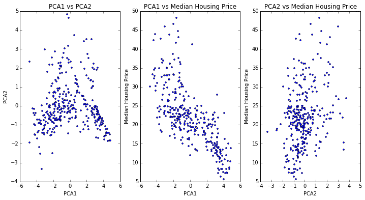

Visualizations


.png)


My name is Xiaojuan Wu, and welcome to my fun world of business intelligence! I am a BI Engineer. I love big data and machine leaning.
I work a lot with SQL and Tableau. And I love them.
The recommendation system provides recommendations based on the traffic quality.
Traffic Quality Recommendation SystemHere is the code to build this system: Recommendation System
Retention is a good way to measure an app's performance in the market. By using a retention report you can see how many users come back after installation or first opening.
Classic Retention ReportThis report shows the amount of time from clicking an ad to installation of the app. This is a critial indicator of traffic quality.
Lagtime Summary
This part includes projects I have worked on using Machine Learning algorithms, such as Linear Regression, Logistic Regression, KNN Neighbourhood, PCA etc. This also inludes methodologyes to test the data models' accuracy.
This project uses linear regression to find the corralation between different features(such as the number of rooms, location etc) and the price of house in Boston real estate market. The dataset has been splite to training and test datasets, and create regression model using training dataset and test the accuracy using the test dataset. Gradient descent algorithm has been used to find the best value of beta and alpha which can minimize the cost function.
Data Set: Boston Housing Prices
Data Model: Linear/Logistic Regression
Algorithms: Cross Validation to train the model; Gradient Descent to minimize the cost function
Please check out the code from Github: Gradient Descent and Regression

KNN Nearest Neighbor is a method used for classification and regression.
Data Set: Boston Housing Prices
Data Model: KNN Neast Neighbor
Algorithms: Cross Validation to train the model; Cost function to check the accuracy of the model
Please check out the code from Github: KNN Nearest Neighbor

PCA(Pricipal Components Analysis) is a useful technique for finding patterns in high dimensions.
Data Set: Movie reviews from Rotten Tomatoes
Data Model: Naive Bayes Classifier
Algorithms: NLP(Nature Language Process) to analyze reviews; PCA to find the best features
Please check out the code from Github: PCA and Natrual Language Process
